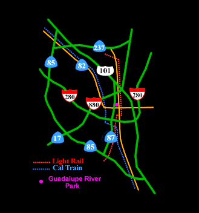

Guadalupe River Park, Corner of San Carlos Street and Woz Way |
 |
| Southbound 280 | Exit at Bird Avenue. Turn left onto Bird Avenue and then right on San Carlos Street. The Park is on the right, corner of San Carlos and Woz way. |
| Northbound 280 | Exit onto Route 87 (Guadalupe Pkwy) northbound. Exit at San Carlos Street. |
| Southbound Route 87 | Exit at San Carlos Street. |
| Northbound Route 87 | Exit at San Carlos Street. |
| Southbound 101 | Exit onto Route 87 (Guadalupe Pkwy) then exit at San Carlos Street. |
| Northbound 101 | Exit onto Interstate 280 north-bound. Then exit onto Route 87 (Guadalupe Pkwy) northbound. Exit at San Carlos Street. |
| Southbound 680 | Southbound 680 becomes Interstate 280 northbound. Then exit onto Route 87 (Guadalupe Pkwy) northbound. Exit at San Carlos Street. |
| Southbound 880 | Exit at Coleman Avenue. Turn left onto Coleman Avenue (crossing over the free-way). Proceed on Coleman Avenue to San Carlos Street. |
| Northbound 17 | Exit onto Interstate 280 south-bound and exit at Bird Avenue. Turn left onto Bird Avenue then right on San Carlos Street. |